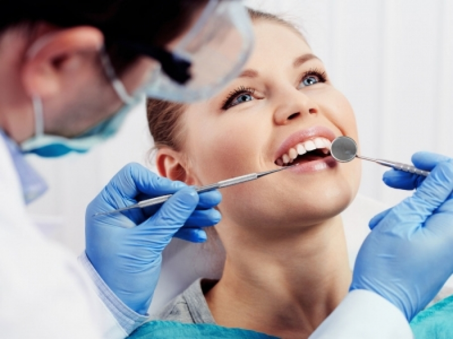

З роками чи внаслідок різних життєвих ситуацій людина може пошкодити один або декілька зубів, а то й втратити їх. Особливо прикро, коли це помітно в процесі спілкування чи посмішки — мимоволі стаєш стриманішим, затиснутим, навіть похмурим. До того ж доводиться коректувати меню, вибирати більш м’які та рідкі страви, відмовляючись від улюбленого стейку чи хрусткого печива.
Бездоганна посмішка знову сяятиме на вашому обличчі! Пропонуємо вам унікальні полевошпатні вініри, які досконало імітують природній зуб і надають йому довершеної форми. Такі вініри потребують мінімального обпилювання зубів та є надзвичайно міцними. У клініці Ястремського вам нададуть усі необхідні стоматологічні послуги для відновлення краси та функціональності зубного ряду. Коронки, вініри, металокераміка, зубні мости, при необхідності протезування і імплантація — ми визначимо усі необхідні етапи для усунення вашої стоматологічної проблеми.
